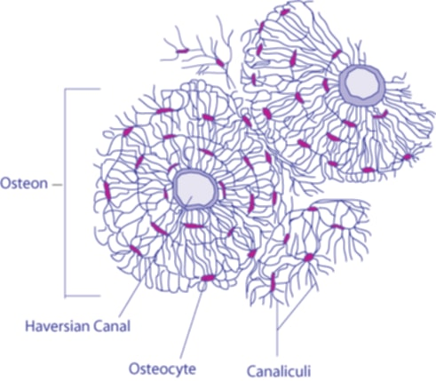
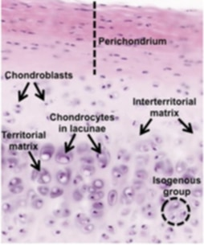
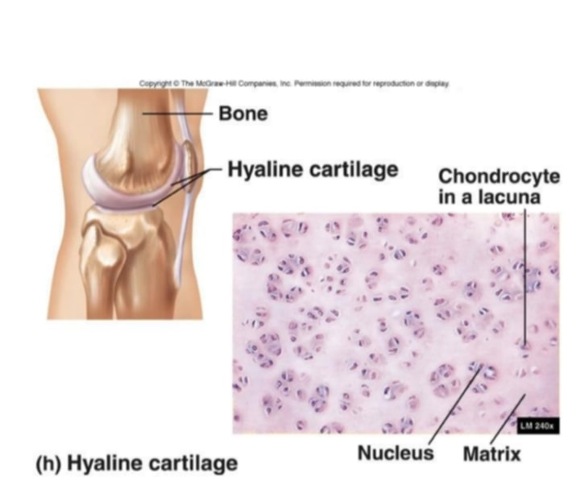
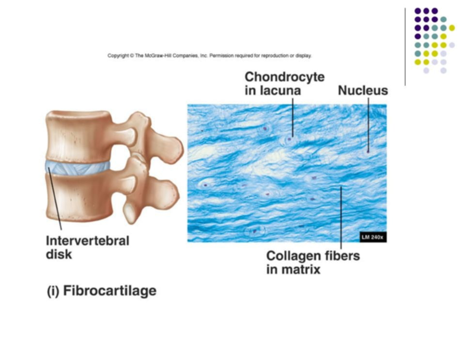
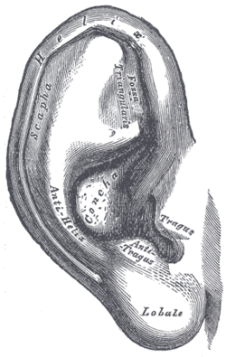

Supportive Connective Tissue
Types of Supportive Connective Tissue
Provides firmness, support, and structural integrity to the body, particularly in bone and cartilage.
Bone
- hardest connective tissue
- hard, mineralized tissue found in the skeleton
- cell components:
- Osteoblasts: bone-forming cells
- Osteocytes: mature bone cells
- Osteoclasts: bone resorption cells
- Osteon: basic unit of compact bone

Cartilage
- covers ends of bones, between vertebrae, ear and tip of nose
- contain collagen and elastic fiber
- relatively solid and is a non-vascularized tissue (no blood)
- function: support and flexibility
- Chondroblast - produce cartilage
- Chondrocytes - mature cartilage cells

Types of Cartilage
Hyaline Cartilage
- most common type of cartilage, contains many collagen fibers and is found in many places including the nose, between the ribs and the sternum and in the rings of the trachea.
- Function: Provides smooth surfaces for movement at joints, flexibility, and support.

Fibrocartilage
- tough and contains many collagen fibers and is responsible for cushioning the knee joint and for forming the disks between the vertebrae.
- Function: Provides support and rigidity to attached/surrounding structures, and absorbs compressive shock.

Elastic Cartilage
- contains a dense network of elastic fibers in addition to collagen fibers, providing strength and elasticity.
- found in structures such as the external ear, epiglottis, and larynx.
- Function: Maintains the shape of these structures while allowing flexibility.
